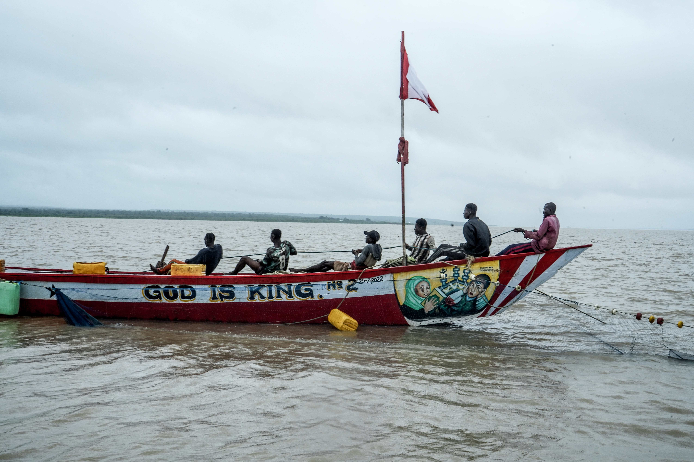
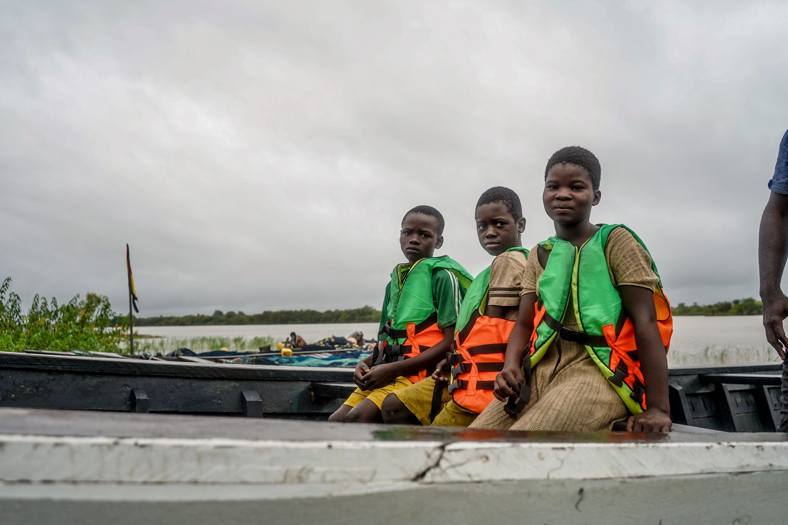
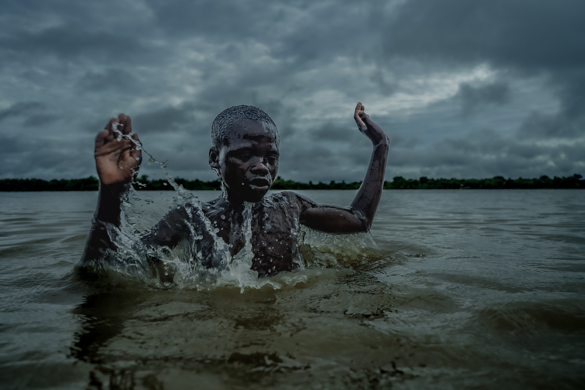
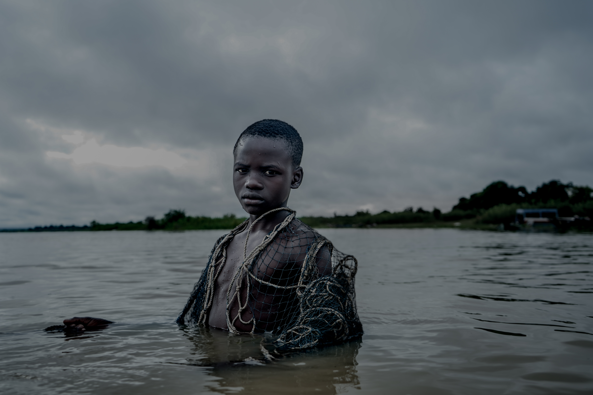
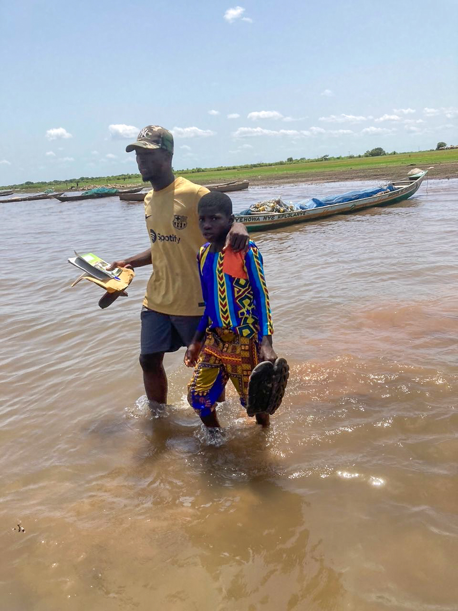
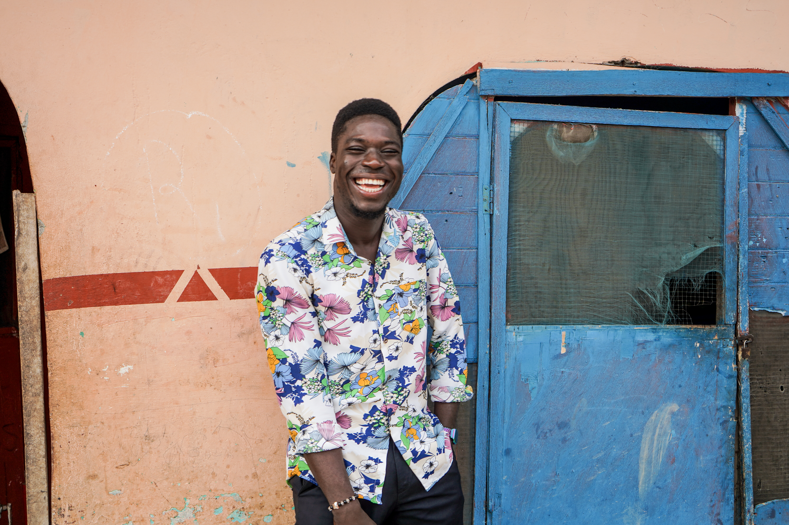
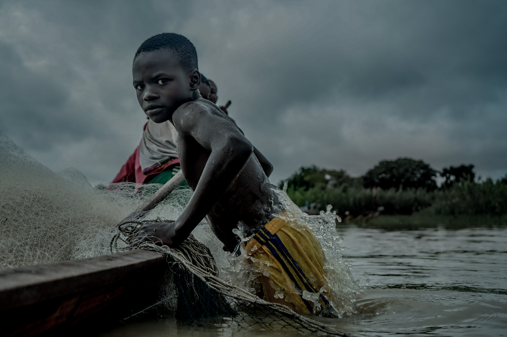

Education can change the direction of a life. But for children facing exploitation, poverty, and trafficking, getting into a classroom is only part of the journey.
True change can also require protection, recovery, family support, and the opportunity to build a future beyond the circumstances a child was born into.
That is why partnerships matter.
GNET is proud to highlight the work of Many Hopes and their Ghana partner, Challenging Heights. Through this feature, we are highlighting the work being done in Ghana and sharing the stories of young people whose lives have been transformed through support, education, and opportunity.



Challenging Heights is Many Hopes' partner in Ghana. The organization works with children affected by trafficking and exploitation and supports their recovery, education, and reintegration.
Their work includes the Recovery Center, where rescued children can receive care and counseling while beginning the process of returning to education and reconnecting with their families where possible.
The stories of Naru and Alfred show why this work matters. Their journeys are different, but both demonstrate what can happen when a child is given an opportunity to recover, learn, and imagine a future beyond exploitation.
The stories of individual children exist within a much larger challenge. Child labour remains a serious issue in Ghana and around the world.
About 2.5 million children ages 5 to 17 are reported to be engaged in child labour in Ghana.
About 1.2 million children in Ghana are reported to be involved in hazardous work.
ILO materials report that one in six children ages 6 to 14 working around Lake Volta are in abusive conditions.
Statistics are drawn from International Labour Organization materials concerning child labour in Ghana and the Lake Volta fisheries sector.
The challenge is also global. According to the latest ILO and UNICEF global estimates, about 138 million children were engaged in child labour in 2024, including about 54 million in hazardous work.
These numbers represent children whose opportunities can be limited by circumstances far beyond their control.
After Naru's father passed away, his family struggled with extreme poverty and uncertainty. When his mother remarried, Naru believed that his circumstances were beginning to improve.
During a school break, Naru's stepfather offered to take him and his brothers to Lake Volta to earn money fishing. But within days, Naru realized that something was wrong. He had been trafficked.
Naru and other boys were forced to work extremely long hours. If they did not catch enough fish, they faced abuse.
Years passed before Naru's biological uncle was able to locate Naru and his brothers and negotiate for their release.
His uncle welcomed the brothers into his home and encouraged them to continue their education.
Naru returned to school and worked hard. He quickly became one of the top students in his class.
Eventually, he was accepted into university and later admitted to law school. However, the cost of continuing his education was more than he could afford.

That was when Naru found Challenging Heights and its Enhanced Reintegration Program for survivors of trafficking.
Through the program, Naru received a scholarship that allowed him to continue his education.
Today, Naru is a second year law student.
His dream is to work in policy and help write and reform laws around child labour so that other children do not experience what he endured.

To know Alfred is to love him. He is driven, charismatic, and his warmth and resilience leave a lasting impression.
But Alfred's story began in a much darker place.
Alfred was born into slavery on Lake Volta in Ghana. His mother had been trafficked before he was born. When he was old enough to walk, Alfred was forced to work long days on fishing boats.
He mended nets, entered dangerous waters to untangle them, and endured abuse when exhaustion overtook him.
The memories of those years stayed with him. He remembered the constant fear and the suffering he witnessed around him, including the suffering of his mother.

At ten years old, Alfred was rescued by Challenging Heights and taken to the Recovery Center.
Alfred received medical care and counseling and was enrolled in school. He had never attended school before and began first grade at eleven years old.
Although starting school at that age was intimidating, Alfred worked hard and caught up with his peers.
After high school, Alfred earned the highly competitive opportunity to attend university.
Yet Alfred wanted to give back to the place that had helped change his life.
During university, he returned to the Recovery Center and worked with children who had been rescued and reunited with their families.
He helped monitor children to make sure they were nourished and attending school. Most importantly, Alfred became an example for other children at the center.
They could see someone who had experienced circumstances similar to theirs and gone on to build a different future.
Alfred earned his undergraduate degree in Business and Accounting in 2023. His journey then continued to the United States, where he pursued an MBA at Missouri Baptist University and graduated in 2025.
The photographs shared with GNET help us see the environment in which many of these children lived and worked. They remind us that behind every statistic is a person with a story, a family, a dream, and a future worth protecting.

Stories like Naru's and Alfred's remind us that meaningful change does not happen through one organization working alone.
It takes people willing to listen. Organizations willing to collaborate. Communities willing to support children. And survivors whose experiences can help shape a better future for those who come after them.
For GNET, partnerships are an important part of our mission. We believe that young people can use their voices and platforms to highlight organizations already doing meaningful work and help more people understand the issues affecting children around the world.
A child's circumstances should never determine the limits of their future.
Challenging Heights' work demonstrates what can happen when a child is given the opportunity to recover, return to education, and imagine a future beyond what they have experienced.
Naru is pursuing law with the goal of influencing policy. Alfred has pursued higher education and continues to carry his experience into a new chapter of his life.
Their journeys are different, but both demonstrate the power of opportunity.
At GNET, we are honored to help highlight these stories and the work behind them.
Awareness is one part of creating change. Learn more about the organizations working to protect children and expand opportunities, and help share their work with others.
Learn More About Many HopesInternational Labour Organization. Ghana child labour and Lake Volta fisheries project materials.
International Labour Organization and UNICEF. 2024 Global Estimates of Child Labour.
Story information and photographs provided by Many Hopes for this GNET feature.
This feature was prepared using information and photographs provided by Many Hopes. The feature is intended to be reviewed and approved by Many Hopes and Challenging Heights before publication.
← Back to Blog